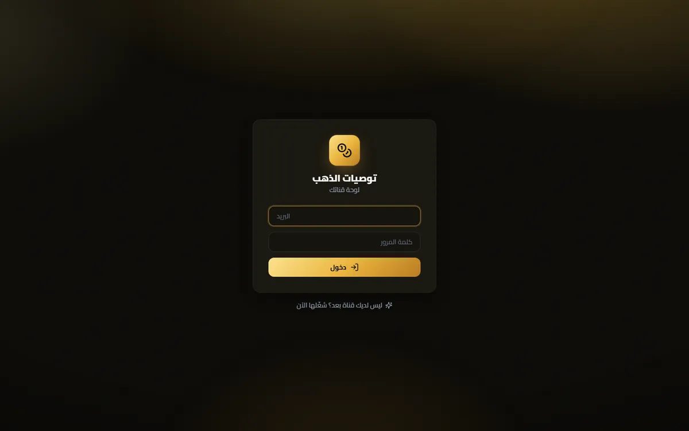
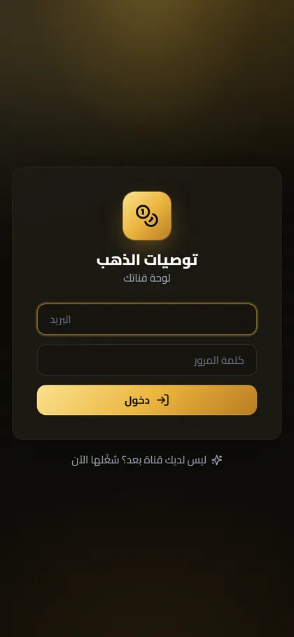

The scale, before any claim
Exactly one tenant on the system, and it is me (tenants = 1, channels = 0, tenant_users = 0) — the multi-tenant architecture has never carried a second customer · 3 subscriber accounts marked ACTIVE, only two of whom ever paid · 5 confirmed payments totalling $240, the last on 2026-07-27, with the next one (2026-08-06) rejected · 14 recommendations in the database, last tracking event 2026-09-03
- The problem
- Isolating customer data inside one system. The naive fix — writing `where tenant_id = X` in every query — fails silently, not because someone forgets, but because a lazy relationship load issues its own SELECT outside the original query: you fetch tenant 1's recommendations correctly filtered, then read `rec.events`, and SQLAlchemy goes and fetches every tenant's events — no error, no exception, just another customer's rows coming back normally and getting published to a channel. The fix is at `bot/tenancy.py:70`: a `do_orm_execute` listener that injects `with_loader_criteria(TenantScoped, …, include_aliases=True)` into every SELECT before it executes, making the filter a property of the ORM engine rather than of the query author's discipline; `include_aliases=True` (line 86) is the practical difference: without it the root query is filtered while lazy loads and aliased queries slip through. A second layer at `bot/tenancy.py:92` stamps new rows with the session's tenant and raises `CrossTenantWrite` on any cross-tenant write instead of letting it through, because one customer's data published into another customer's channel cannot be undone. The stated limit: line 80 returns without filtering if no tenant is set on the session (fail-open), and 16 places across 7 files open `SessionLocal()` directly, outside this protection.
- What it proves
- He puts the protection where it cannot be forgotten — inside the ORM engine, not in the discipline of whoever writes the query — and states its limit openly (fail-open at `bot/tenancy.py:80`, and 16 places across 7 files that open a session outside it) rather than hiding it. And the most honest thing in the project is not a feature but the last commit (4d3c621), where he explains himself how the pending-order feature passed 401 green tests while being impossible in production: the tests run on SQLite while production is PostgreSQL, and `recommendations.status` was created as `varchar(11)` while `WAITING_ENTRY` is thirteen characters — so the production database rejected every pending order while the whole suite stayed green.
The mechanism
The defect happens first, then the mechanism that makes it impossible.
How to read it Read the diagram in three columns: the code you wrote, the SQL that was actually emitted, and the rows that came back. The defect lives in the gap between the first two — a hand-filtered root query is correct, but a lazy relationship read like rec.events makes the ORM emit a second query nobody wrote, and other tenants' rows come back with no error and a plausible row count. It is stopped inside the engine, by a do_orm_execute listener with include_aliases=True that injects the tenant condition into every SELECT, plus a before_flush guard on writes; the closing amber step is the stated limit — a session with no tenant set exits unfiltered, and 16 call sites bypass the guard.
Screens
Captured 2026-09-05 from the addresses shown beneath them, exactly as served — nothing staged.


The code, verbatim
# ───────────────────────── الطبقة 1: حقن الفلتر على القراءة ─────────────────────────
@event.listens_for(orm.Session, "do_orm_execute")
def _scope_reads(execute_state) -> None:
"""يحقن `tenant_id = :current` في كل SELECT على أي جدول يرث TenantScoped.
يشمل استعلامات العلاقات الكسولة تلقائياً (`include_aliases=True`) — وهي المنفذ
الذي تنسى فيه الفلاتر اليدوية عادةً.
"""
if not execute_state.is_select or execute_state.is_column_load:
return
tenant_id = execute_state.session.info.get(_SCOPE_KEY)
if tenant_id is None:
return
execute_state.statement = execute_state.statement.options(
with_loader_criteria(
TenantScoped,
lambda cls: cls.tenant_id == tenant_id,
include_aliases=True,
)
)
Copied verbatim from the repository; nothing elided.
Every number, and the command that produced it
-
401
passing tests — all on in-memory SQLite, while production is PostgreSQL 16
Source
شغّلتُه بنفسي في المستودع: `.venv/Scripts/python.exe -m pytest -q` ← السطر الأخير `401 passed, 9 warnings in 215.14s`؛ ومحرّك الاختبار في tests/tenant_db.py:26 = `"sqlite+aiosqlite://"` -
27
tenant-isolation tests — 13 at the ORM layer, 14 at the HTTP layer
Source
`grep -c "^async def test_\|^def test_" tests/test_isolation.py tests/test_panel_isolation.py` ← 13 و 14 -
19
Alembic migrations, with production's head matching the last file exactly (d6e7f8a9b0c1)
Source
`ls migrations/versions/*.py | wc -l` = 19؛ وعلى السيرفر `docker exec goldsignals-db psql -U gold -d gold_signals -tAc "select version_num from alembic_version"` = d6e7f8a9b0c1 = ملف 20260821_1700_d6e7f8a9b0c1_widen_status_columns.py -
$240
confirmed revenue from 5 payments made by two subscribers ($145 + $95), the last on 2026-07-27
Source
`docker exec goldsignals-db psql -U gold -d gold_signals -tAc "select status, amount, created_at::date from payments order by created_at"` ← 5 صفوف CONFIRMED مجموعها 240 وصفّ سادس 2026-08-06 حالته REJECTED؛ و`select subscriber_id, count(*), sum(amount) from payments where status='CONFIRMED' group by 1` ← `1|3|145` و `2|2|95` أي مشتركان لا ثلاثة -
22,178
lines of Python across 130 files (+ 5,206 lines of TypeScript/TSX across 37 files)
Source
`find bot admin workers migrations ops docker tests -name '*.py' -not -path '*__pycache__*' | xargs cat | wc -l` = 22178 (و`| wc -l` = 130 ملفاً)؛ و`find admin-ui/src \( -name '*.ts' -o -name '*.tsx' \) | xargs cat | wc -l` = 5206 في 37 ملفاً -
0
automatic restarts across all four containers since they were created (RestartCount=0) — and the bot and panel's last start on 2026-08-22 was a manual deploy, not a crash
Source
`ssh srv1564240 "docker inspect --format '{{.Name}} started={{.State.StartedAt}} restarts={{.RestartCount}}' goldsignals-db goldsignals-bot goldsignals-admin goldsignals-backup"` ← restarts=0 للأربعة، وStartedAt = 2026-07-28T21:43Z للقاعدة والنسخ الاحتياطي و2026-08-22T02:52Z للبوت واللوحة. RestartCount ليس مدّة تشغيل: هو عدد مرات إعادة Docker للحاوية بعد سقوطها.
What it does not do
- Only one tenant ever used the multi-tenant architecture, and it is me. `tenants = 1`, `channels = 0`, `tenant_users = 0` — the most heavily engineered part of the system has never carried a second customer, and all 3 subscriber accounts belong to that single tenant.
- All 401 tests run on in-memory SQLite (`tests/tenant_db.py:26`) while production is PostgreSQL 16 — and that exact gap hid a complete production defect until live verification, not the tests, caught it.
- The isolation is fail-open, not fail-closed: if no `tenant_id` is set on the session the listener returns without filtering (`bot/tenancy.py:80`), and 16 places across 7 files open `SessionLocal()` directly, outside `tenant_session` — among them `bot/middlewares/db.py` and `admin/tenant_auth.py`.
- No CI/CD and no git repository on the server (`/opt/gold-signals-bot` has no `.git`, and there is no `.github` directory): deploys are manual rsync and rollback is unpacking a hand-saved archive (`_rollback_admin.tgz` and three others). The 401 tests exist but nothing runs them automatically before a deploy.
Stack
- Python 3.12
- aiogram 3.30 (Telegram Bot API، async + FSM)
- SQLAlchemy 2.0.52 (async ORM)
- FastAPI 0.141 + uvicorn 0.52
- PostgreSQL 16 (إنتاج) · SQLite/aiosqlite 0.22 (اختبارات)
- Alembic 1.19 — 19 هجرة
- APScheduler 3.11
- aiohttp 3.14 (مزوّدو الأسعار)
- cryptography 50 (Fernet) + hashlib.scrypt
- React 18.3.1 + TypeScript 5.6.3 + Vite 5.4.11 + Tailwind 3.4.15
- lightweight-charts 5.2
- Docker Compose — 4 حاويات خلف nginx + Let's Encrypt
- pytest — 401 اختبار
No public repository: the code holds live bot tokens and payment logic.